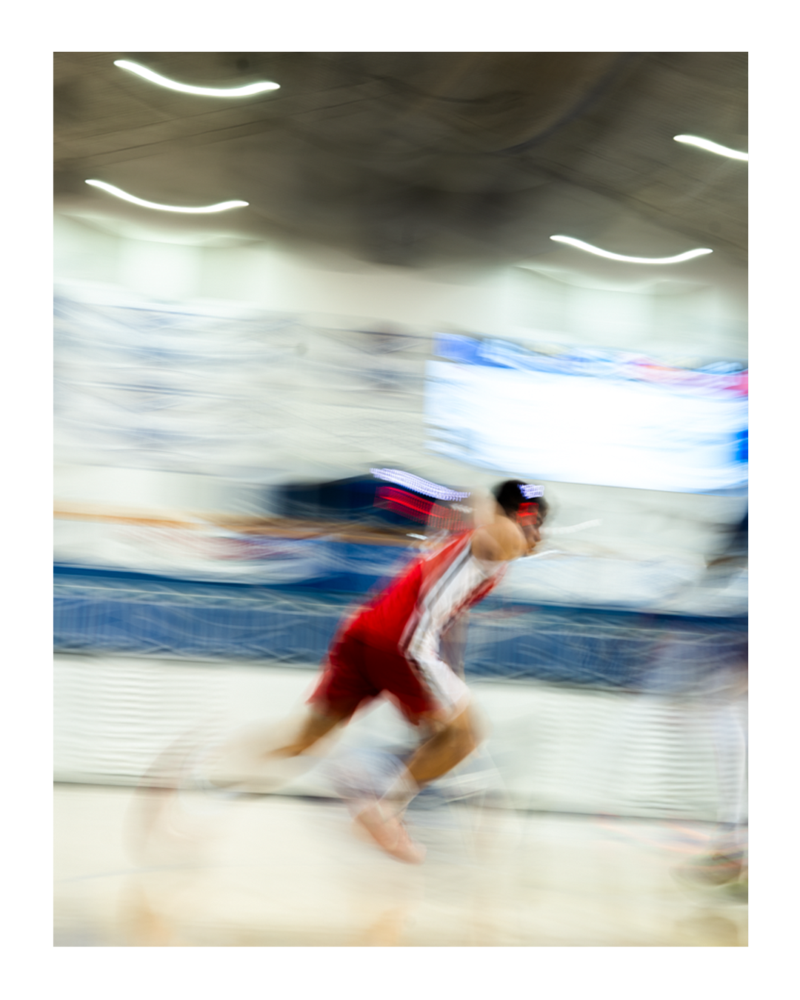
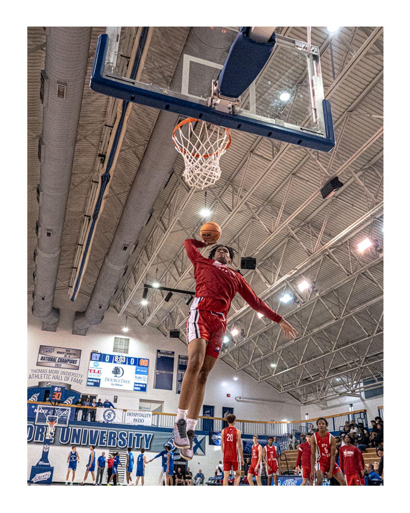
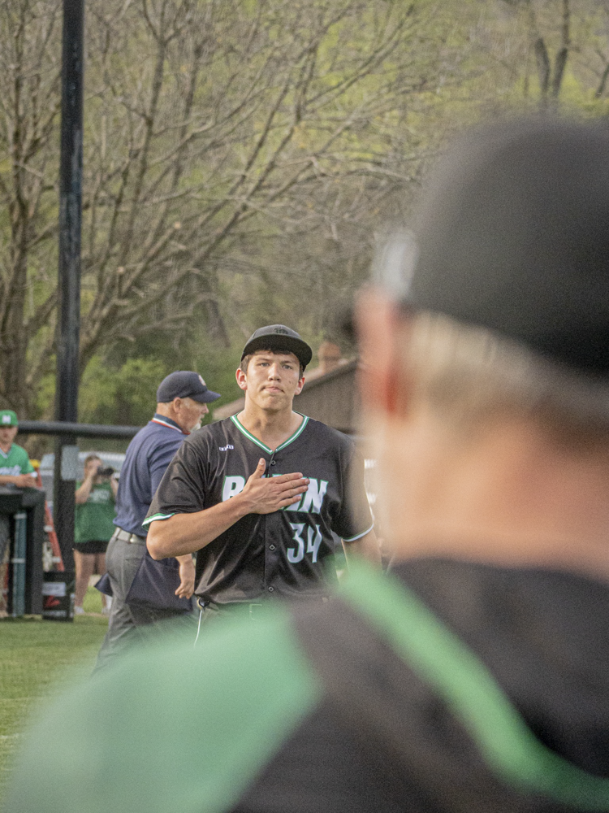
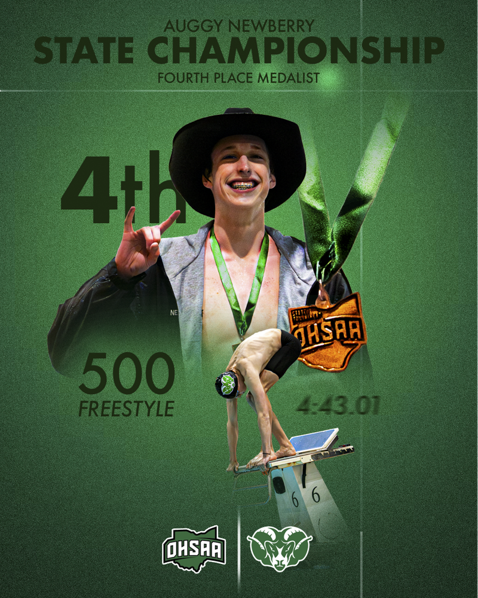

Basketball Collection
Images built around movement, timing, and atmosphere.
This gallery focuses on basketball work that feels more creative than standard game coverage. Some images are sharp and direct, while others lean into blur, motion, and rhythm to create more visual energy.
The goal is to show both technical ability and creative range in a layout that feels modern, polished, and portfolio-ready.








